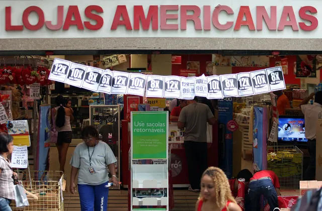
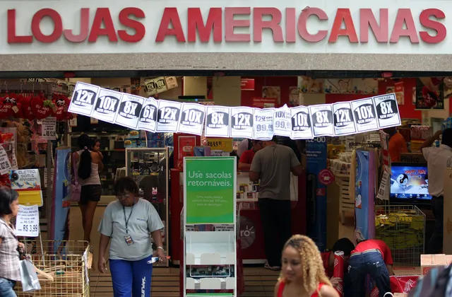

Durante o "boom" das empresas varejistas na bolsa de valores em meados de 2020, as ações da Americanas registraram o pico do seu valor. Em 3 de agosto daquele ano, um papel da companhia era vendido a R$ 122,90, sua máxima histórica. Naquele momento, o valor de mercado da empresa era de pouco mais de R$ 66 bilhões, segundo levantamento de Einar Rivero, da TradeMap, a pedido do g1.
De lá para cá, com base no fechamento do pregão da última segunda-feira (16), a Americanas já perdeu R$ 64,36 bilhões em valor de mercado, enquanto suas ações acumulam uma queda de 98,42%. Até ontem, a empresa valia R$ 1,75 bilhão, depois de despencar quase 40% em um dia e seu papel valer R$ 1,94.
Embora as ações tenham atingido sua mínima histórica nesta semana, após os escândalos sobre as "inconsistências contábeis" de R$ 20 bilhões nas contas da companhia e todos os desdobramentos do caso, a companhia já vinham vivendo um período difícil com seus papéis há vários meses:
- Em agosto de 2020, as ações da Americanas chegaram ao seu ápice e o valor de mercado da companhia era estimado em R$ 66 bilhões;
- Há um ano, em 16 de janeiro de 2022, a Americanas valia R$ 27,25 bilhões;
- Antes do anúncio do rombo bilionário, em 11 de janeiro, a varejista valia cerca de R$ 10,82 bilhões;
- Ontem, a empresa valia R4 1,75 bilhão.
A queda da empresa começou com a piora no cenário macroeconômico brasileiro e que afetou todas as varejistas da bolsa, consequência da pandemia de Covid-19, inflação elevada, alta nos juros e baixo crescimento. Em um ano, as ações acumulam desvalorização de 93,44%,
Desde o anúncio do rombo, entretanto, a desvalorização foi acentuada e, apenas cinco dias depois, as ações já recuaram 79,9%.
LEIA MAIS
- ENTENDA O CASO: Americanas desaba na bolsa após descoberta de rombo de R$ 20 bilhões
- GLOSSÁRIO: Entenda termos como ‘forfait’, ‘covenants’ e ‘debêntures’`
- HISTÓRICO: Americanas foi de lojinha de rua a império varejistas
- JORGE PAULO LEMANN:Homem mais rico do Brasil, perde US$ 329 milhões em um dia com ações da Americanas
Entenda o que aconteceu com a Americanas
A Americanas publicou um fato relevante na última quarta-feira (11), dizendo que foram identificadas “inconsistências em lançamentos contábeis” no balanço, em valor que chega a R$ 20 bilhões, nas primeiras estimativas.
Em outras palavras, a empresa percebeu que o valor bilionário — que é referente aos primeiros nove meses de 2022 e anos anteriores — não havia sido registrado de forma apropriada nos balanços corporativos da empresa. Como consequência, Sérgio Rial, que tinha acabado de assumir a presidência da companhia, renunciou ao cargo.
O rombo ocorreu por meio de uma operação conhecida como "risco sacado". Essa é uma linha de crédito que envolve a empresa, seus fornecedores e instituições financeira.
Nessa operação, uma companhia que precisa pagar seus fornecedores entra em contato com uma instituição financeira que, por meio de um acordo, libera o montante necessário para o pagamento dos fornecedores. É como se a própria instituição pagasse a conta e a companhia, por sua vez, zera sua dívida com os fornecedores e passa a dever para o banco — e, claro, com a cobrança de juros.
No caso da Americanas, pelo que se sabe até o momento, houve uso do risco sacado nas negociações da empresa, mas as operações não foram registradas de forma correta nos balanços contábeis, o que gera dúvidas sobre a solvência da empresa, seu grau de endividamento e traz insegurança aos investidores.
Ao divulgar o fato relevante, a empresa afirmou estimar que "o efeito caixa dessas inconsistências seja imaterial". Assim, o rombo teria apenas um efeito contábil, e não financeiro.
No sábado (14), porém, a companhia divulgou um comunicado informando que a Justiça concedeu uma Tutela de Urgência Cautelar que determina, entre outras medidas, a interrupção de quaisquer cláusulas contratuais que imponham o pagamento antecipado de dívidas da empresa e a incidência de juros durante esse período. Na decisão, o juiz diz que a dívida da Americanas pode chegar a R$ 40 bilhões.